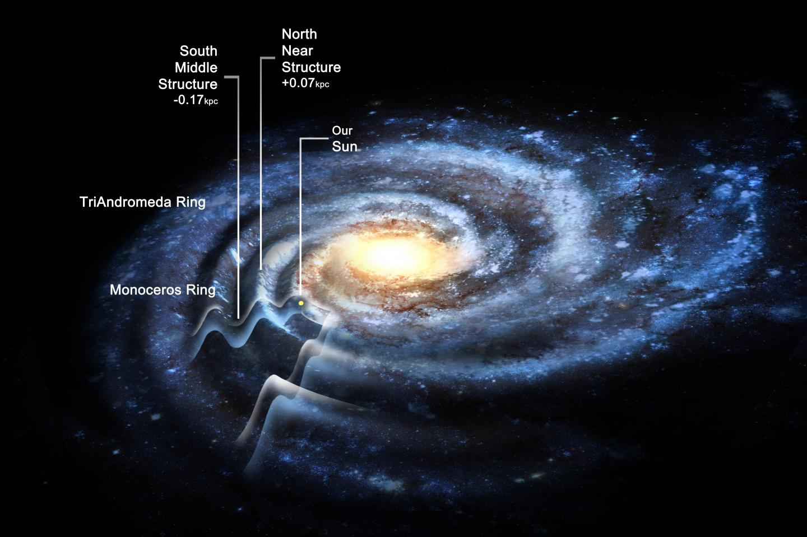
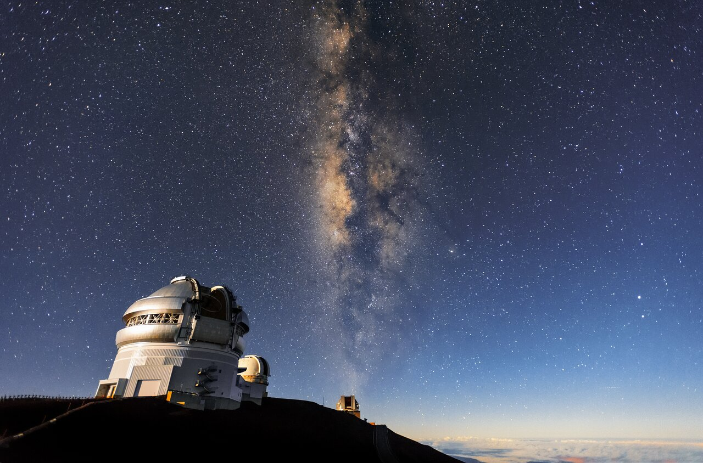

Характеристики
- Тип Спиральная галактика с баром
- Входит в Местная группа
- Масса (1—2)⋅1012 M☉
- Радиус 50 тыс. св. лет (16 кпк)
Что такое Млечный Путь?
Галактика Млечный Путь — это огромное скопление пыли, газа и множества звезд, включая наше Солнце. Поскольку Земля находится в этой галактике, Млечный Путь часто называют “нашей галактикой”.
Может быть сложно поверить в то, что эта звездная полоса на ночном небе на самом деле — огромная галактика, которая простирается на миллиарды километров вокруг нашей планеты. Насколько она огромная? Давайте выясним.
Размер Млечного Пути
В Местной группе галактик Млечный Путь на втором место по размерам после Андромеды. Его ширина — 105 700 световых лет, а ширина Андромеды — 220 000 световых лет. Кстати, размер самой Местной группы галактик (скопление нескольких десятков галактик) — 10 миллионов световых лет.
Почему Млечный Путь так называется?
Название нашей галактики, как и названия многих других астрономических объектов, пришло к нам из Древней Греции и Древнего Рима. Греки и римляне считали, что полоса из звезд на небе — это молочная река. Греки верили, что это было молоко, которая богиня Гера разлила по небу, а древнеримские мифы гласили, что Млечный Путь — это молоко от их богини Опы.
Каждый народ видел что-то свое в нашей галактике. Например, народы восточной Азии называли Млечный Путь Серебрянной Небесной Рекой; Финны и Эстонцы — Птичьей Тропой; в Южной Африке верили, что это — Хребет Ночи.
К какому типу галактик относится Млечный Путь?
Есть четыре основных типа галактик: спиральные, эллиптические, линзовидные и неправильные. Обладающий спиральной формой Млечный Путь относится к первому типу; если бы вы могли взглянуть на него сверху (или снизу), то увидели бы огромную крутящуюся вертушку.
Если говорить точнее, то Млечный Путь — это спиральная галактика с перемычкой. Перемычкой (или “баром”) называют яркую полосу из звезд в центре галактики. Внутри этой перемычки располагается ядро галактики, а к ее краям примыкают два спиральных рукава. Если бы Млечный Путь был обычной спиральной галактикой, то его рукава вели бы к центру (ядру) галактики, как у Андромеды, а не к перемычке.
Нам известно о четырех рукавах Млечного Пути: два основных соединенных с перемычкой (рукав Персея и рукав Щита-Центавра) и два малых, расположенных между основными (рукав Стрельца и рукав Наугольника). Раньше ученые думали, что все эти рукава были основными, но с помощью инфракрасных изображений космического телескопа Спитцер обнаружили обратное.